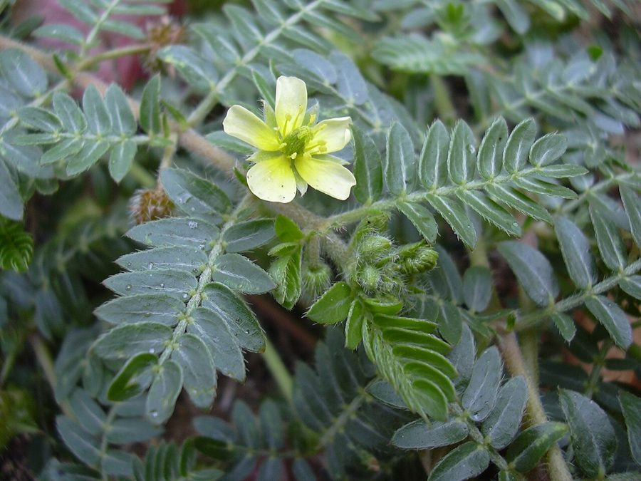

गोखरूGokhru
Tribulus terrestris · Zygophyllaceae · FLR-0153

- Scientific name
- Tribulus terrestris L.
- Family
- Zygophyllaceae
- Hindi
- गोखरू
- Local names
- gokhru, gokharu, gokshura, chhota gokhru, puncture vine
- Status here
- native
- IUCN
- not evaluated
- Review
- audited and independently read
When to look कब देखें
Present all year.
Uses and possibilities उपयोग और संभावनाएँ
“Traditional medicine” means a documented traditional use, not a claim that it works. Nothing on this page is medical advice.
Drawn from the documented uses in the profile below, where each is labelled traditional, current or a research lead. All uses →
गोखरू / Gokhru
Tribulus terrestris L. — Zygophyllaceae
गोखरू — सूखी, बंजर ज़मीन पर फैलने वाला पौधा, जिसके नुकीले फल नंगे पैरों और गाड़ी के टायरों को चोट पहुँचाते हैं (इसीलिए "पंक्चर विन" कहा जाता है)। पत्तियाँ बहुत छोटी और जोड़ों में, पीले फूल खिलते हैं। आयुर्वेद में यह गुर्दे (kidney) के लिए बेहद महत्वपूर्ण माना जाता है। इसकी जड़ें और फल दोनों दवा के रूप में प्रयोग होते हैं।
Quick Identification त्वरित पहचान
| Feature | Description |
|---|---|
| Plant habit | Annual herb, spreading prostrate, 20–60 cm diameter |
| Leaves | Pinnate, small, 3–6 cm, opposite pairs, tiny leaflets 2–5 mm |
| Flowers | Small, bright yellow, 5-petalled, 8–12 mm |
| Fruits | Hard, warty, 5-pointed star-shaped capsules, 8–10 mm, prickly |
| Stem | Hairy, spreading along the ground |
| The test | The distinctive 5-pointed, prickly fruit is diagnostic |
Field tip: In summer on bare ground, look for a small, prostrate herb with compound leaves and bright yellow flowers; in winter, for the hard, star-shaped prickly fruits that stick to shoes and socks.
हिंदी — कैसे पहचानें: पीले फूल, पत्तियाँ छोटी, नुकीली तारे जैसी फलियाँ।
Morphology आकारिकी
Biometrics:
| Measurement | Range |
|---|---|
| Plant spread | 20–60 cm |
| Leaf length | 3–6 cm |
| Flower diameter | 8–12 mm |
| Fruit diameter | 8–10 mm |
Stem and branches: Hairy, spreading prostrate, rooting at nodes.
Leaves: Opposite, pinnately compound; leaflets small, entire, alternate.
Flowers: Regular, 5-petaled, bright yellow, numerous.
Fruits: Hard, tuberculate capsules, 5-lobed and spiny, one-seeded per lobe.
हिंदी: पत्तियाँ कटी, पीले फूल, कठोर नुकीली फली।
Behaviour & Ecology व्यवहार और पारिस्थितिकी
A prostrate herb of waste ground, drought-tolerant and found in poor, sandy soils. The plant flowers and fruits prolifically, producing hard seeds that persist in the soil for years. The prickly fruits are dispersed by animals (sticking to fur and clothes) and vehicles, allowing the plant to colonise new areas.
हिंदी: खराब ज़मीन पर भी बढ़ता है, बहुत बीज, नुकीली फली से फैलता है।
Life Cycle / Phenology जीवन चक्र
| Month / season | Event |
|---|---|
| March–April | Germination in dry season |
| May–September | Rapid growth; flowering and fruiting |
| October–February | Fruit ripening and seed dispersal |
हिंदी: गर्मी और बरसात में बढ़ता है, सर्दी में फल।
Pests and Diseases कीट और रोग
- Minimal pests.
Agricultural / Human Relevance कृषि प्रासंगिकता
Traditional Preparations (not medical advice):
- Kidney and Urinary Health → Fruit/Root → Decoction of 5–10 g dried fruit in 200 mL water → Drink 50 mL twice daily.
- Joint Pain → Whole Plant → Powdered herb mixed with sesame oil → Apply topically over joints.
- Hormonal Balance → Fruit → Decoction or powder form → Consume as directed by practitioner.
Today. Commercial Ayurvedic preparations containing gokhru are widely available; the fruit is sold in bazaars.
Research direction (a lead, not a result). Terrestrins and other steroidal saponins from Tribulus terrestris have been studied for various bioactivities; clinical validation is ongoing.
हिंदी: गुर्दे और पेशाब के लिए सबसे अच्छा। जोड़ों के दर्द में। बाज़ार में मिलता है।
Expected Locally स्थानीय रूप से अपेक्षित
Not a field record. Written from published accounts for eastern Uttar Pradesh. No confirmed local sighting yet — if you have seen it, that is what the atlas needs.
अभी तक स्थानीय पुष्टि नहीं। यह विवरण प्रकाशित स्रोतों से है, किसी अवलोकन से नहीं।
To be expected on dry waste ground, village edges, and roadsides across the district.
Distribution वितरण
Global range: Native to warm regions of South Asia, Africa, and the Mediterranean; now worldwide.
In India: Widespread in all states.
In Uttar Pradesh: Common in dry areas.
In Basti district / eastern UP: Expected on all waste ground.
Research Questions शोध प्रश्न
Anyone can investigate these | कोई भी इन प्रश्नों की जाँच कर सकता है
- How many gokhru fruits stick to your socks if you walk through a patch? — Count and record.
- How far do the fruits travel on vehicle tyres? — Mark fruits and track dispersal.
- How is the plant used in traditional medicine in your village? / आपके गाँव में इसे दवा में कैसे इस्तेमाल करते हैं? — Ask elders.
- Do the fruits cause punctures in bicycle tyres? — Test.
Similar Species मिलती-जुलती प्रजातियाँ
| Species | How to tell apart | हिंदी |
|---|---|---|
| Tribulus alatus | Similar; smaller flowers; 4-lobed fruit | छोटे फूल, 4 नुकीली फली |
| Nirgundi seedling (Vitex negundo) | Leaves compound but softer; no prickly fruit | कोमल पत्तियाँ, नुकीली फली नहीं |
Field rule: A prostrate herb with small compound leaves, yellow flowers, and distinctive hard, 5-pointed star-shaped prickly fruits is gokhru.
Taxonomy & Classification वर्गीकरण
Original description. Described by Carl Linnaeus in Species Plantarum (1753: 387). The epithet terrestris means "terrestrial" or "of the earth".
Subspecies. Variable; several subspecies recognized.
Family and order placement. Zygophyllaceae, order Sapindales. Tribulus is a tropical genus of about 25 species.
IUCN status rationale. Not evaluated. Widespread and abundant.
Photo Gallery फोटो गैलरी
Photos needed आवश्यक फोटो
- [ ] Whole plant with yellow flowers (पूरा पौधा)
- [ ] Mature fruit showing 5 points (फल)
References संदर्भ
- Linnaeus, C. (1753). Species Plantarum, vol. 1, p. 387. Stockholm. [original description]
- Kirtikar, K.R. & Basu, B.D. (1935). Indian Medicinal Plants, 2nd ed., vol. 1. Lalit Mohan Basu, Allahabad.
- Chopra, R.N., Nayar, S.L. & Chopra, I.C. (1956). Glossary of Indian Medicinal Plants. CSIR, New Delhi.
- Al-Ali, M. et al. (2003). Botanical and chemical composition of herbal combination (Tri-Stat) used in the treatment of benign prostate hyperplasia. Journal of Herbal Pharmacotherapy 3(4): 5–19.
- GBIF Occurrence Data — Tribulus terrestris, India (2026).
Source file: species/flora/medicinal/gokhru.md